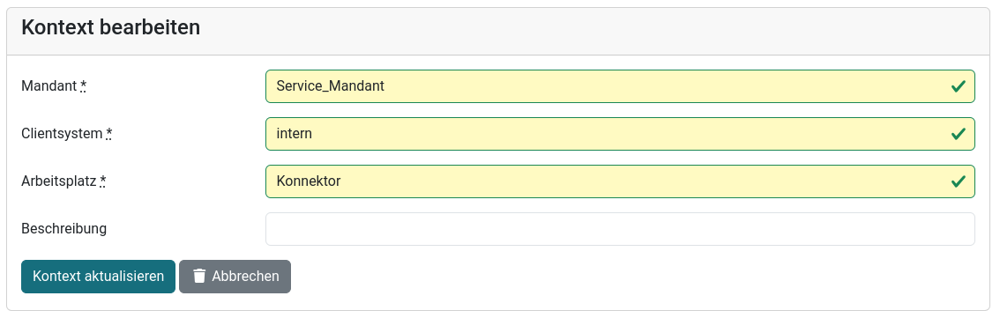
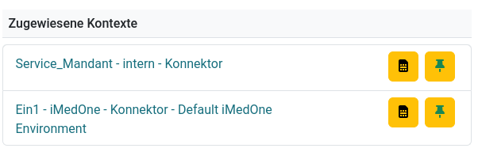
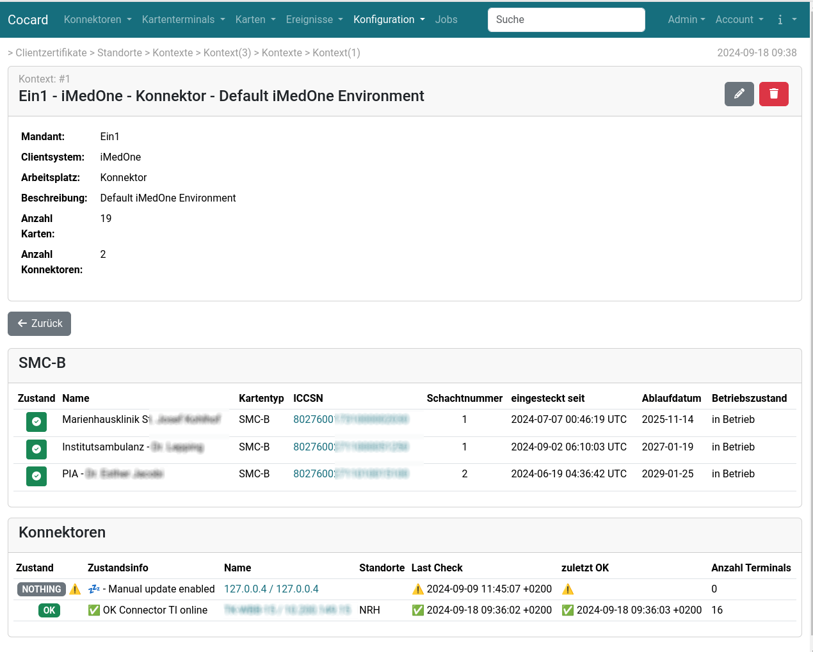

Kontexte
Überblick
Jede Anfrage an den Konnektor benötigt gemäß der Definition der Gematik einen Aufrufkontext. Der Aufrufkontext besteht aus dem Triplet
Mandant - Clientsystem - Arbeitsplatz
Der Aufrufkontext wirkt als Filter. Anfragen zu bestimmten Kartenlesegeräten oder Karten, die im Infomodell nicht die Kombination aus den drei Werten besitzen, werden abgelehnt bzw. oder das Ergebnis ist ggf. eine leere Liste. Mit aktivierter Authentifikation wird zusätzlich geprüft, ob die Anfrage unter dem Namen des Clientsystems erfolgt ist. Eine Abfrage z.B. des Kontextes Ein1 - iMedOne - Konnektor ist nur möglich, wenn die Authentifikation als Client iMedOne erfolgt. Andernfalls wird die Anfrage abgelehnt.
Die Abfrage von Kartenterminals (GetCardTerminals) und Karten (GetCards) erfolgt mandantenweit, d.h. der Konnektor gibt eine Liste aller Kartenterminals bzw. Karten zurück, die im Infomodell dem Mandanten zugewiesen sind, unabhängig vom Clientsystem und dem Arbeitsplatz. Trotzdem müssen Clientsystem und Arbeitsplatz grundsätzlich im Infomodell des Konnektors vorhanden sein, sonst filtert der Konnektor ggf. Einträge heraus und die Liste ist unvollständig oder leer.
Kontexte in Cocard
Das
Konnektor-Informationsmodell der Gematik PIC_Kon_100 ist recht komplex aufgebaut und besteht aus vielen paarweisen oder Dreierbeziehungen. Ein Kontext in Cocard besteht dagegen aus einem festen Triplet Mandant - Clientsystem - Arbeitsplatz. Die in Cocard gewählte Kombination muss entsprechend im Konnektor-Infomodell konfiguriert sein.

Neben den drei Angaben Mandant, Clientsystem gibt die Möglichkeit, eine kurze Beschreibung anzugeben, die später eine Identifizierung des Kontextes erleichtert, etwa den Namen einer Institutsambulanz, wenn als Mandant nur eine wenig sprechende Betriebsstättennummer verwendet wird.
Das Triplet wird zusammen mit der Beschreibung in Auswahllisten und der Konnektor- und Kartenansicht angezeigt (siehe Abbildung).

In der Anzeige des Kontextes finden sich eine Übersicht von SMC-B-Karten und Konnektoren, die diesen Kontext nutzen.
